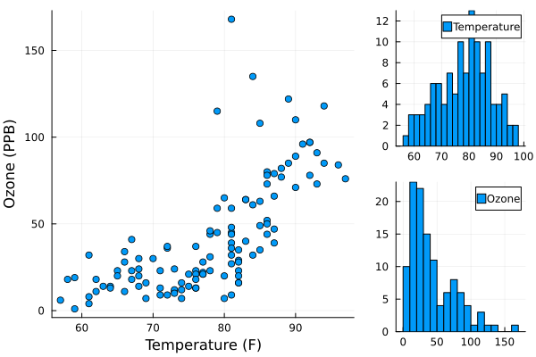

Getting Started
We’re going to show the basic use and syntax of Bigsimr by using the New York air quality data set (airquality) included in the RDatasets package. We will focus specifically on the temperature (degrees Fahrenheit) and ozone level (parts per billion).
using Distributions, Bigsimr
using RDatasets, DataFrames, Statisticsjulia> df = dataset("datasets", "airquality")[:, [:Ozone, :Temp]] |> dropmissing;
| Row | Ozone | Temp |
| | Int64 | Int64 |
|-----|-------|-------|
| 1 | 41 | 67 |
| 2 | 36 | 72 |
| 3 | 12 | 74 |
| ⋮ | ⋮ | ⋮ |
| 114 | 14 | 75 |
| 115 | 18 | 76 |
| 116 | 20 | 68 |
110 rows omittedLet’s look at the joint distribution of the Ozone and Temperature
We can see that not all margins are normally distributed; the ozone level is highly skewed. Though we don’t know the true distribution of ozone levels, we can go forward assuming that it is log-normally distributed.
To simulate observations from this joint distribution, we need to estimate the correlation and the marginal parameters.
Estimating Correlation
To estimate the correlation, we use cor with an argument specifying the type of correlation to estimate. The options are Pearson, Spearman, or Kendall.
julia> ρ = cor(Matrix(df), Pearson)2×2 Matrix{Float64}: 1.0 0.69836 0.69836 1.0
Defining Marginal Distributions
Next we can estimate the marginal parameters. Assuming that the Temperature is normally distributed, it has parameters:
julia> μ_Temp = mean(df.Temp)77.87068965517241julia> σ_Temp = std(df.Temp)9.48548563759966
and assuming that Ozone is log-normally distributed, it has parameters:
julia> μ_Ozone = mean(log.(df.Ozone))3.418515100812007julia> σ_Ozone = sqrt(mean((log.(df.Ozone) .- mean(log.(df.Ozone))).^2))0.8617359690270703
Finally we take the parameters and put them into a vector of margins:
julia> margins = [Normal(μ_Temp, σ_Temp), LogNormal(μ_Ozone, σ_Ozone)]2-element Vector{Distribution{Univariate, Continuous}}: Normal{Float64}(μ=77.87068965517241, σ=9.48548563759966) LogNormal{Float64}(μ=3.418515100812007, σ=0.8617359690270703)
Correlation Bounds
Given a vector of margins, the theoretical lower and upper correlation coefficients can be estimated using simulation:
julia> lower, upper = cor_bounds(margins, Pearson);julia> lower2×2 Matrix{Float64}: 1.0 -0.827695 -0.827695 1.0julia> upper2×2 Matrix{Float64}: 1.0 0.826898 0.826898 1.0
The pearson_bounds function uses more sophisticated methods to determine the theoretical lower and upper Pearson correlation bounds. It also requires more computational time.
julia> lower, upper = pearson_bounds(margins);julia> lower2×2 Matrix{Float64}: 1.0 -0.821122 -0.821122 1.0julia> upper2×2 Matrix{Float64}: 1.0 0.821122 0.821122 1.0
Simulating Multivariate Data
Let’s now simulate 10,000 observations from the joint distribution using rvec:
julia> x = rvec(10_000, ρ, margins)10000×2 Matrix{Float64}: 87.4109 22.3591 75.7104 19.7585 61.4875 7.91311 87.2304 93.3604 80.5391 20.9102 74.0107 42.8532 92.2595 76.5276 59.7821 20.2999 73.4545 4.69385 77.3004 18.7691 ⋮ 82.8761 34.0147 75.0262 41.8732 67.5626 53.1339 64.4427 7.12912 81.6657 47.3555 63.7596 7.44514 88.6181 44.4193 83.7085 134.4 71.7335 35.387
Visualizing Bivariate Data
df_sim = DataFrame(x, [:Temp, :Ozone]);
histogram2d(df_sim.:Temp, df_sim.:Ozone, nbins=250, legend=false,
xlims=extrema(df.:Temp) .+ (-10, 10),
ylims=extrema(df.:Ozone) .+ (0, 20))Compared to Uncorrelated Samples
We can compare the bivariate distribution above to one where no correlation is taken into account.
df_sim2 = DataFrame(
Temp = rand(margins[1], 10000),
Ozone = rand(margins[2], 10000)
);
histogram2d(df_sim2.:Temp, df_sim2.:Ozone, nbins=250, legend=false,
xlims=extrema(df.:Temp) .+ (-10, 10),
ylims=extrema(df.:Ozone) .+ (0, 20))